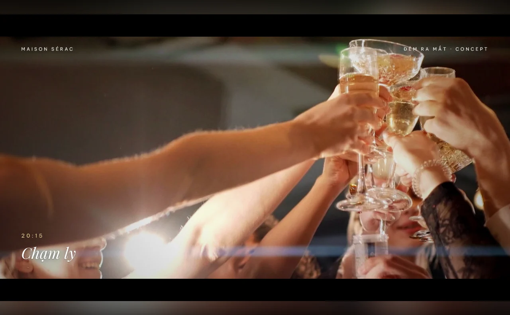

Edit video · Nhà hàng & cafe
Dựng video TikTok cho nhà hàng và quán cafe
Thực khách quyết định ăn ở đâu ngay khi lướt điện thoại lúc gần trưa hoặc chiều tối. Dream Labs dựng footage của quán thành video TikTok, Reels khiến người xem thèm, biết quán ở đâu và nhắn đặt bàn ngay.
- Giá từ800.000đ
- Thời gian từ2 ngày
- Số gói3 gói

Một tô phở bốc khói, ly cà phê muối được rót chậm, tiếng chảo xèo trong bếp. Những khoảnh khắc đó diễn ra mỗi ngày ở quán bạn, nhưng phần lớn chỉ được chụp vội rồi nằm im trong điện thoại. Trên TikTok, Reels và nhóm ẩm thực, quán nào kể được khoảnh khắc đó thành video hấp dẫn thì quán đó có khách mới. Dựng video TikTok cho nhà hàng là việc Dream Labs làm để món ngon của bạn được nhìn thấy đúng lúc khách đang đói.
Bạn hoặc nhân viên quay bằng điện thoại trong giờ chuẩn bị, Dream Labs lo phần dựng. Cần quay chuyên nghiệp cho thực đơn mới, phần quay được báo giá riêng.
Vì sao video của quán ít người dừng lại xem
- Món ăn lên hình nhạt màu. Đèn vàng trong quán khiến rau mất màu xanh, thịt trông khô, nước dùng đục. Món ngon ngoài đời trông bình thường trên màn hình.
- Không ai biết quán ở đâu. Video đẹp nhưng không có địa chỉ, giờ mở cửa, giá món. Người xem thích rồi quên.
- Nhịp quá chậm. Cảnh nấu kéo dài cả phút mà không cắt, trong khi người xem quen với những video món ăn nhanh, dồn dập.
- Chỉ đăng khi có khuyến mãi. Ngoài dịp lễ, kênh im lặng, khách quen quên dần, khách mới không biết tới.
- Tiếng ồn quán át lời chủ quán. Lời giới thiệu món đặc biệt bị chìm trong tiếng quạt, tiếng xe.
Dream Labs dựng gì cho nhà hàng và quán cafe
Video món ăn cận cảnh, cắt theo nhịp
Cận cảnh lúc đổ nước dùng, lúc cắt miếng bò, lúc kéo sợi phô mai. Cắt theo nhịp nhạc, speed ramp ở khoảnh khắc ngon mắt nhất, chỉnh màu cho món ăn tươi và ấm mà vẫn đúng màu thật. Tên món và giá hiện ngay trên màn hình.
Video hậu trường bếp
Đầu bếp sơ chế từ sáng sớm, nước dùng ninh nhiều giờ, bánh làm tay mỗi ngày. Video hậu trường cho khách thấy lý do món của bạn đáng giá, và giúp quán khác biệt với hàng chục quán cùng con phố.
Video không gian và trải nghiệm
Góc ngồi đẹp để chụp ảnh, view ban công, không khí buổi tối có nhạc sống. Với quán cafe, đây thường là lý do chính khiến nhóm bạn trẻ chọn quán cuối tuần.
Video recap sự kiện và món mới
Đêm khai trương, tiệc theo chủ đề, ra mắt thực đơn mùa mới. Gói Chuyên nghiệp dựng recap ngắn có lower-third ghi mốc giờ, phụ đề động và thẻ kết có số đặt bàn.
Quán của bạn được gì
- Khách mới biết tới quán mỗi tuần. Video món ăn được chia sẻ trong nhóm bạn bè và nhóm ẩm thực địa phương, đưa quán tới những người chưa từng đi ngang qua.
- Khách cũ nhớ quay lại. Món mới, ưu đãi khung giờ chiều, thực đơn cuối tuần được nhắc đều đặn trên bảng tin.
- Bán được món lãi cao. Video tập trung vào món đặc trưng, combo hoặc đồ uống có biên lợi nhuận tốt, thay vì để khách tự chọn món rẻ nhất.
- Chủ quán không phải ngồi dựng tới khuya. Sau giờ đóng cửa, bạn nghỉ ngơi; video đã có người lo.
- Quảng cáo khu vực hiệu quả hơn. Mẫu video rõ món, rõ giá, rõ địa chỉ phù hợp chạy quảng cáo cho người ở gần quán.
Thử nghĩ: một bàn khách mới mỗi tối trong một tháng mang về bao nhiêu doanh thu, chưa kể những lần họ quay lại?
Cấu trúc một video món ăn 30 giây
Đây là khung mà Dream Labs hay dùng cho video món đặc trưng của quán:
- Giây 0–3: khoảnh khắc ngon nhất. Nước dùng rót xuống, lát thịt được nhấc lên, chữ to ghi tên món.
- Giây 3–15: cách làm. Ba bốn cảnh bếp cắt nhanh, cho thấy nguyên liệu và công sức.
- Giây 15–25: thưởng thức. Khách gắp món, phản ứng tự nhiên, góc bàn có không gian quán phía sau.
- Giây 25–30: thông tin. Giá, địa chỉ, giờ mở cửa và lời mời nhắn tin đặt bàn.
Cùng một buổi quay, có thể dựng nhiều video theo khung này cho từng món, đủ để đăng đều trong nhiều tuần.
Bảng giá dựng video cho nhà hàng
Chi phí một video thường chỉ ngang vài bàn khách. Nhưng video tốt làm việc lâu hơn nhiều: được chia sẻ, được lưu, được dùng lại cho quảng cáo, trang Google Maps và màn hình trong quán.
Gói Cơ bản
800.000đ/video
2 ngày · 1 vòng sửa
Doanh nghiệp được gìVideo gọn gàng, có phụ đề để đăng đều đặn mà không mất thời gian tự dựng.
- Video ngắn ≤ 60 giây
- Cắt ghép, nhạc nền, phụ đề
- Chỉnh màu cơ bản
- Không gồm: Motion text & hiệu ứng
Gói Chuyên nghiệp
Phổ biến nhất2.000.000đ/video
3–4 ngày · 2 vòng sửa
Doanh nghiệp được gìVideo giữ người xem tới cuối, dựng một lần dùng được cho TikTok, Reels và YouTube.
- Video ≤ 3 phút
- Phụ đề động, motion text
- Color grading điện ảnh
- Xuất 3 tỷ lệ 9:16, 1:1, 16:9
Gói Cao cấp
5.000.000đ/video
5–7 ngày · 3 vòng sửa
Doanh nghiệp được gìVideo quảng cáo chỉn chu kèm 5 clip ngắn: đủ nội dung cho cả một chiến dịch.
- Video ≤ 10 phút hoặc TVC
- Kịch bản dựng + sound design
- VFX, chèn đồ họa 3D
- Bộ 5 clip cắt ngắn đi kèm
Giá chưa gồm VAT. Báo giá cuối cùng theo phạm vi thống nhất trước khi làm, không phát sinh ngoài phạm vi.
Quán cafe, quán ăn nhỏ đăng video món hằng tuần chọn gói Cơ bản, 800.000đ/video. Nhà hàng chạy quảng cáo cho món mới hoặc chương trình khuyến mãi chọn gói Chuyên nghiệp, 2.000.000đ/video, có phụ đề động và đủ ba tỷ lệ. Chuỗi nhà hàng làm video thương hiệu hoặc phim khai trương chi nhánh chọn gói Cao cấp, 5.000.000đ/video. Xem so sánh ở bảng giá.
Câu hỏi thường gặp
Nên quay món ăn vào lúc nào?
Lúc chuẩn bị trước giờ mở cửa hoặc giờ vắng buổi chiều, khi bếp đủ thời gian bày món đẹp. Nếu được, quay gần cửa sổ để có ánh sáng tự nhiên, món ăn lên màu thật hơn.
Có cần người review nổi tiếng không?
Không bắt buộc. Video chủ quán, đầu bếp hoặc nhân viên giới thiệu món một cách chân thật thường tạo được thiện cảm. Nếu bạn hợp tác với người review, Dream Labs có thể dựng lại footage của buổi đó thành nhiều video ngắn.
Dùng nhạc đang thịnh hành trên TikTok được không?
Nhạc thịnh hành nên chọn trực tiếp trong thư viện của TikTok khi đăng. Dream Labs bàn giao bản dựng khớp nhịp kèm bản không nhạc để bạn tự gắn nhạc trên ứng dụng.
Thực đơn đổi theo mùa thì video có lỗi thời không?
Thông tin giá và món mùa được đặt ở lớp chữ riêng. Khi đổi thực đơn, chỉ cần sửa lớp chữ hoặc dựng lại đoạn kết, không phải làm lại cả video.
Video kéo khách tới rồi, đừng để họ phải gọi điện mới xem được thực đơn: xem website cho nhà hàng, landing page đặt bàn và tự động nhận đặt bàn cho nhà hàng. Hoặc về trang edit video quảng cáo.
Bắt đầu cùng Dream Labs
Món ngon cần video ngon. Gửi footage cho Dream Labs
Gửi vài đoạn quay món ăn, không gian quán và thực đơn đang muốn đẩy. Bạn nhận hướng dựng và báo giá trong 24 giờ.